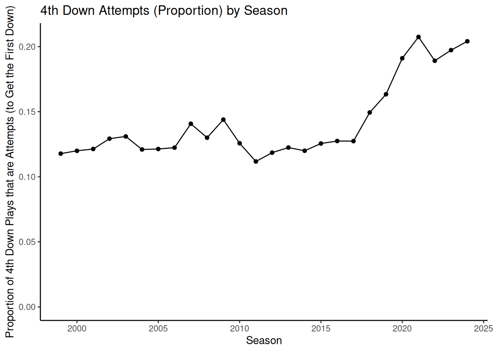
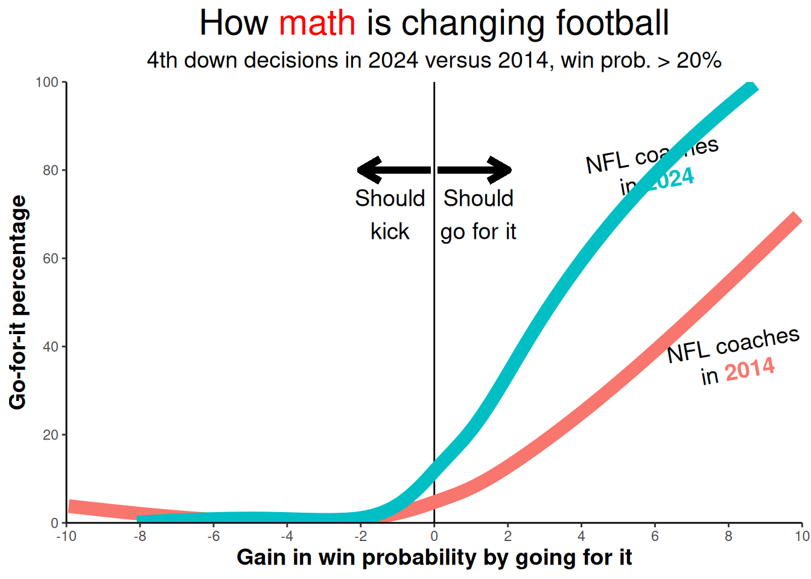

I want your feedback to make the book better for you and other readers. If you find typos, errors, or places where the text may be improved, please let me know. The best ways to provide feedback are by GitHub or hypothes.is annotations.
Opening an issue or submitting a pull request on GitHub: https://github.com/isaactpetersen/Fantasy-Football-Analytics-Textbook
Adding an annotation using hypothes.is.
To add an annotation, select some text and then click the
symbol on the pop-up menu.
To see the annotations of others, click the
symbol in the upper right-hand corner of the page.
25 Sports and Cognitive Psychology
25.1 Getting Started
25.1.1 Load Packages
25.1.2 Download Football Data
25.2 Overview
There are a number of ways in which analytics have changed sports (archived at https://perma.cc/PQ5R-TWFA). Here is a summary of some of the key ways that analytics has led to changes.
Much of the history of analytics in sports traces back to Bill James. James was a member of the Society for American Baseball Research (SABR). He published a series of Baseball Abstracts, which included players’ statistics. James published the first Baseball Abstract in 1977 (https://www.pbs.org/thinktank/transcript1197.html; archived at https://perma.cc/Y7J7-GB9V). He coined the term Sabermetrics (which was originally named SABRmetrics, based on the name of the society) to refer to advanced metrics and statistical/empirical analysis of baseball. James believed that traditional statistics like batting average, runs batted in (RBIs), and pitchers’ wins did not reflect a player’s true value—i.e., their contribution to the team’s success. Instead, he advocated for the use of more advanced metrics that could provide a deeper understanding of a player’s performance and value such as on-base percentage (OBP), slugging percentage (SLG), wins above replacement (WAR), and fielding independent pitching (FIP). He also developed advanced metrics such as runs created (RC) and defense efficiency rating (DER).
James’ ideas were slow to catch on among those in baseball. Neverthless, some people eventually caught on to his ideas—and to good success. Billy Beane, a general manager, used Sabermetrics to help the Oakland Athletics, a small market team with a limited budget, better compete with teams with larger budgets. He used statistics such as on-base percentage to identify player value more accurately, especially for identifying undervalued players. The story was described in Michael Lewis’ book, Moneyball, which was turned into a movie. Following publication of Moneyball, Theo Epstein, who was president of the Boston Red Sox and then of the Chicago Cubs, used sabermetrics to help each win the World Series.
In addition to teams using Sabermetrics to evaluate player talent, teams also began to frequently use statistical analysis to inform decision making during games, which led to key changes in the style of play. For instace, defensive shifts—where defensive players moved to locations on the field where particular hitters were most likely to hit the ball—became more common, attempts to steal bases became less common, there were fewer bunts, batters took more pitches (i.e., watched more pitches without swinging), there were more frequent pitching changes (for particular pitcher–batter matchups; such as to have a right-handed pitcher face a left-handed batter or vice versa), and a greater focus on velocity and spin rate among pitchers. Some of these analytics-driven changes in play style eventually led Major League Baseball (MLB) to make rule changes in an attempt to make the game more exciting to watch, including banning defensive shifts, reducing the number of pitching changes allowed, and making the bases larger and easier to steal.
Although baseball was one of the first major sports to embrace analytics, other sports have been transformed by analytics, as well. For instance, in basketball, there has been a greater focus on three points and buckets close to the rim (e.g., dunks and layups), with way fewer midrange shots. Moreover, star players rest more games.
Football has also seen greater use of analytics, although its uptake has been somewhat slower than in many other sports. When asked about how he makes the decision about whether to go for two after a touchdown, Steelers Head Coach Mike Tomlin stated:
We work a menu of plays in that area over the course of the week. We rank them at the latter part of the week, and then we get into the stadium and we play it by ear. A lot of it has to do wiht the feel or the flow of the game. Maybe what personnel group we think they’re going to match our personnel group with. As we start to play and work the ball down the field on the drives that produce the touchdowns before the point after, we have a little inclination of what their personality might be at least in terms of matching our personnel. All of those things weigh into the decision. It legitimately is a feel thing. I think that’s why you play the game. You can take analytics to baseball and things like that but football is always going to be football. I got a lot of respect for analytics and numbers, but I’m not going to make judgements based on those numbers. The game is the game. It’s an emotional one played by emotional and driven men. That’s an element of the game you can’t measure. Often times decisions such as that weigh heavily into the equation.
— Steelers Head Coach Mike Tomlin, 2015 (archived at https://perma.cc/7CHJ-BTWX)
That is, Mike Tomlin, suggested that he does not take into account analytics when making decisions. Perhaps that is why the Pittsburgh Steelers were voted one of the least analytically advanced teams in the NFL in 2020 (archived at https://perma.cc/R7FA-HGGB).
A player talent evaluator for the NFL noted that many people around the league believe that the use of analytics is better suited for baseball than football because baseball involves more games, players, and one-on-one matchups (archived at https://web.archive.org/web/20200803205803/https://www.cleveland.com/browns/2016/01/in_an_nfl_divided_over_analyti.html). By contrast, player performance in football may be more dependent on teammates and playcalls. The player talent evaluator noted, “In football they don’t know how to use all the numbers yet…They have the data, they have all these different stats but the people I have talked to aren’t completely sure how to use it.” (archived at https://web.archive.org/web/20200803205803/https://www.cleveland.com/browns/2016/01/in_an_nfl_divided_over_analyti.html).
Nevertheless, more and more people around the league are using analytics; for examples of articles, see here (archived at https://perma.cc/7BKP-A4GJ) and here (archived at https://perma.cc/WXE3-53E6). Head Coach Doug Peterson heavily relied on analytics with the Philadelphia Eagles to help them win the 2017 Super Bowl; for more information, see here (archived at https://perma.cc/49KQ-R785) and here (archived at https://perma.cc/2GRF-8Z5K).
Examples of changes in football due to the use of analytics include more often going for it on fourth down, a greater emphasis on the passing game, drafting Running Backs later in the draft (and, more generally, valuing Running Backs less), and trading down in the draft to obtain more low picks (rather than having fewer high picks) because top picks are frequently overvalued (Massey & Thaler, 2013).
25.3 Coaching and Risk Aversion
It had been known for a long time that going for it on fourth down would frequently increase a team’s chances of winning. Despite that, historically, teams rarely went for it on fourth down and elected to punt or kick a field goal instead. It is curious that there was such a discrepancy between the decisions that would maximize teams’ winning percentage and the decisions coaches actually made. One potential explanation for the discrepancy is because of coaches’ risk aversion. As noted in Section 14.4.10, when it is possible to experience either a gain or a loss from a decision, loss aversion bias tends to lead people to make risk-averse decisions (Kahneman, 2011). According to this idea, in the case of failing to successfully convert on fourth down, coaches do not want to have to defend their decision to go for it to the media or the owner or general manager. That is, they may often play not to lose, rather than to win, in order to keep their job.
Code
nfl_pbp4thDown <- nfl_pbp %>%
filter(down == 4) %>%
filter(!(play_type %in% c("no_play","qb_kneel")))
nfl_pbp4thDown$goForIt <- NA
nfl_pbp4thDown$goForIt[which(nfl_pbp4thDown$play_type %in% c("field_goal","punt"))] <- 0
nfl_pbp4thDown$goForIt[which(nfl_pbp4thDown$play_type %in% c("pass","run"))] <- 1
nfl_pbp4thDownPlotData <- nfl_pbp4thDown %>%
filter(!is.na(goForIt)) %>%
group_by(season) %>%
summarise(
goForItPct = mean(goForIt, na.rm = TRUE),
n = n(),
sd = sd(goForIt),
se = sd / n
)
ggplot2::ggplot(
data = nfl_pbp4thDownPlotData,
ggplot2::aes(
x = season,
y = goForItPct)) +
geom_point() +
geom_line() +
geom_ribbon(
aes(
y = goForItPct,
ymin = goForItPct - qnorm(0.975)*se,
ymax = goForItPct + qnorm(0.975)*se),
alpha = 0.2) +
scale_y_continuous(
limits = c(0, NA)
) +
ggplot2::labs(
x = "Season",
y = "Proportion of 4th Down Plays that are Attempts (to Get the First Down)",
title = "4th Down Attempts (Proportion) by Season",
) +
ggplot2::theme_classic()
Adapted from Ben Baldwin: https://www.nfl4th.com/articles/4th-down-research.html (archived at https://perma.cc/S5D8-3NCU)
Code
# labels on the plot
text_df <- tibble(
label = c("NFL coaches<br>in <span style='color:#00BFC4'>**2024**</span>", "NFL coaches<br>in <span style='color:#F8766D'>**2014**</span>"),
x = c(6, 8.2),
y = c(80, 37),
angle = c(10, 10),
color = c("black", "black")
)
nfl_4thdown %>%
filter(vegas_wp > .2, between(go_boost, -10, 10), season %in% c(2014, 2024)) %>%
ggplot(
aes(
x = go_boost,
y = go,
color = as.factor(season))) +
ggtext::geom_richtext(
data = text_df,
aes(
x,
y,
label = label,
angle = angle),
color = "black",
fill = NA,
label.color = NA,
size = 5) +
geom_vline(xintercept = 0) +
stat_smooth(
method = "gam",
method.args = list(gamma = 1),
formula = y ~ s(x, bs = "cs", k = 10),
show.legend = FALSE,
se = FALSE,
linewidth = 4) +
# this is just to get the plot to draw the full 0 to 100 range
geom_hline(
yintercept = 100,
alpha = 0) +
geom_hline(
yintercept = 0,
alpha = 0) +
ggplot2::theme_classic() +
labs(
x = "Gain in win probability by going for it",
y = "Go-for-it percentage",
subtitle = "4th down decisions in 2024 versus 2014, win prob. > 20%",
title = glue::glue("How <span style='color:red'>math</span> is changing football")) +
theme(
legend.position = "none",
plot.title = element_markdown(size = 22, hjust = 0.5),
plot.subtitle = element_markdown(size = 14, hjust = 0.5),
axis.title.x = element_text(size = 14, face = "bold"),
axis.title.y = element_text(size = 14, face = "bold")
) +
scale_y_continuous(
breaks = scales::pretty_breaks(n = 4),
limits = c(0, 100),
expand = c(0,0)) +
scale_x_continuous(
breaks = scales::pretty_breaks(n = 10),
limits = c(-10, 10),
expand = c(0,0)) +
annotate(
"text",
x = -1.2,
y = 70,
label = "Should\nkick",
color = "black",
size = 5) +
annotate(
"text",
x = 1.2,
y = 70,
label = "Should\ngo for it",
color = "black",
size = 5) +
geom_segment(
aes(
x = -.1,
y = 80,
xend = -2,
yend = 80),
arrow = arrow(length = unit(0.05, "npc")),
color = "black",
linewidth = 2) +
geom_segment(
aes(
x = .1,
y = 80,
xend = 2,
yend = 80),
arrow = arrow(length = unit(0.05, "npc")),
color = "black",
linewidth = 2)
25.4 Conclusion
25.5 Session Info
R version 4.4.2 (2024-10-31)
Platform: x86_64-pc-linux-gnu
Running under: Ubuntu 24.04.2 LTS
Matrix products: default
BLAS: /usr/lib/x86_64-linux-gnu/openblas-pthread/libblas.so.3
LAPACK: /usr/lib/x86_64-linux-gnu/openblas-pthread/libopenblasp-r0.3.26.so; LAPACK version 3.12.0
locale:
[1] LC_CTYPE=C.UTF-8 LC_NUMERIC=C LC_TIME=C.UTF-8
[4] LC_COLLATE=C.UTF-8 LC_MONETARY=C.UTF-8 LC_MESSAGES=C.UTF-8
[7] LC_PAPER=C.UTF-8 LC_NAME=C LC_ADDRESS=C
[10] LC_TELEPHONE=C LC_MEASUREMENT=C.UTF-8 LC_IDENTIFICATION=C
time zone: UTC
tzcode source: system (glibc)
attached base packages:
[1] stats graphics grDevices utils datasets methods base
other attached packages:
[1] ggtext_0.1.2 lubridate_1.9.4 forcats_1.0.0 stringr_1.5.1
[5] dplyr_1.1.4 purrr_1.0.4 readr_2.1.5 tidyr_1.3.1
[9] tibble_3.2.1 ggplot2_3.5.1 tidyverse_2.0.0 nflreadr_1.4.1
loaded via a namespace (and not attached):
[1] generics_0.1.3 xml2_1.3.6 stringi_1.8.4 lattice_0.22-6
[5] hms_1.1.3 digest_0.6.37 magrittr_2.0.3 evaluate_1.0.3
[9] grid_4.4.2 timechange_0.3.0 fastmap_1.2.0 Matrix_1.7-1
[13] jsonlite_1.9.0 mgcv_1.9-1 scales_1.3.0 cli_3.6.4
[17] rlang_1.1.5 commonmark_1.9.2 munsell_0.5.1 splines_4.4.2
[21] withr_3.0.2 cachem_1.1.0 yaml_2.3.10 tools_4.4.2
[25] tzdb_0.4.0 memoise_2.0.1 colorspace_2.1-1 vctrs_0.6.5
[29] R6_2.6.1 lifecycle_1.0.4 htmlwidgets_1.6.4 pkgconfig_2.0.3
[33] pillar_1.10.1 gtable_0.3.6 data.table_1.17.0 glue_1.8.0
[37] Rcpp_1.0.14 xfun_0.51 tidyselect_1.2.1 knitr_1.49
[41] farver_2.1.2 htmltools_0.5.8.1 nlme_3.1-166 rmarkdown_2.29
[45] labeling_0.4.3 compiler_4.4.2 markdown_1.13 gridtext_0.1.5